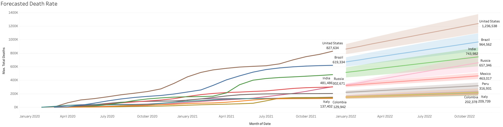

Covid-19 Case Study
Introduction
Welcome to the Covid-19 Worldwide impact analysis case study! In this case study, I will performing real-world tasks of a junior data analyst to get a better understanding of the data. I picked this topic as its affected each and every one of us in one way or another whether you’ve had covid yourself or had a family member or friend go through the symptoms. In order to effectively answer the questions that I considered important, I will be following these key steps of the data analysis process: ask, prepare, process, analyze, share, and act.
Scenario
I am a junior data analyst working for the healthcare data analyst department at Baptist Hospital of South Florida. The Director of the Imaging department wants to understand the forecasted death rate of the infected people in the United States and the top ten countries with the highest death tally since the beginning of the pandemic. Therefore, analyzing the most infected population by comparison, how many people are vaccinated, and how many are not vaccinated. From these insights, the team and I will help the hospital improve ways to get more people vaccinated and to try and decline the projected numbers. However, the Director must approve of the recommendations, so they must be backed with captivating data visualizations and data insights.
Ask Phase
The stakeholder who is also the Director has an objective to understand how much worse the infected covid-19 population rate was going to be for the entire state United States in comparison to the rest of the world. The task was to identify how many people were not vaccinated in the United States and find ways to get the more people vaccinated to stop the infected rate from increasing. We will go through the data of those who are vaccinated vs those who aren’t to compare and assess the differences between them in different metrics. The audience as stated before is everyone as we all have come in contact with covid. By making a decision that’s constructed around the data this is the best way to come to a logical conclusion. By solving this problem we could use the insights to see why some people are still not vaccinated.
Prepare Phase
The information we are analyzing is real-world data that can be found on the website www.ourworldindata.org/covid-deaths for the purpose of studying our case and answering the questions that needs to be uncovered. For this project, the downloaded CSV file was from the earliest date of February 15, 2020 to February 2022 and stored the data in a folder of the capstone project folder. The data was imported from the csv file into a Microsoft SQL Server to be sorted and filtered to better understand the different types of information gathered. There is no bias as the data is gathered from a reputable .org website with only factual information of the matter. Therefore, the data is reliable, original, comprehensive, current, and cited. The data does not have any private information that reveals anything about anybody. This is all publicly collected information. So far there are no issues with the data as it is updated each and every day. The data is in raw format therefore it will be cleaned to perform the analysis needed.
Process Phase
For this dataset, excel was used to get a quick glimpse data but because the dataset is so large. Microsoft SQL Server was utilized to sort and filter the data accordingly. By cleaning the data through filtering and sorting it makes the information more usable for analysis. Afterwards, Tableau was used to import the data from the SQL server to better visualize the data that was analyzed to create a dashboard that catches the eye in less than five seconds. As previously stated the data does not have any private information that reveals anything about anybody as this is all publicly collected information. .
Analyze Phase
The data is organized in the best way to fit the requirements that we set. The data was prepared and process in our previous steps that was discussed before. To format the data, different tables were joined together either by location or date to get the percent of the population that was vaccinated to illustrate which country had the highest vaccination rate. During this project, we utilized Tableau to visually demonstrate the forecasted population rate increase of the country that will have the highest death rate by the end of 2022. Another interesting concept was identifying what country had the highest death count compared to the other nine countries. India’s (497K) death total tally was half of the United States (890K) even though India’s population is 4 times the amount of the United States. In addition, China with the largest population in the world didn’t even come in the top ten for the most casualties. China also had the highest total number of vaccinations when compared to the India who came in second and finally the United States in third.
Share Phase
The data extracted allowed us to answer the questions the stakeholder posed as we figured out the forecasted death rate for the rest of the United States and some other significant countries. The story being told by the data illustrates some but not all the countries with a larger vaccination proportion has calmed the death count of their nation. The best way for the stakeholders to understand the information that was manipulated and transformed was to create a Tableau dashboard so they could visually digest the data.
Act Phase
We concluded that a lot of the people who hadn’t gotten the vaccine were scared of the side effects and the idea that it took scientists less than a year to produce a vaccine. The next step was to inform the stakeholders that proper information about the vaccine needed to be distributed to the population so that they understand the risks of further mutation of Covid-19 and the perils that follow. I think we could've perhaps dug deeper to figure out what the vaccination rate and the death count was for the people of Florida who had contracted Covid-19 since the beginning of the pandemic. There are many ways of going about dissecting data as there is never only one true method of coming to a conclusion.
SQL CODE
SELECT location, population, MAX(total_cases) AS HighestInfectionCount, MAX((total_cases/population)) * 100 AS Infected
FROM CovidDeaths
GROUP BY location, population
ORDER BY 4
SELECT location, population, MAX(total_cases) AS Total_Cases, MAX(total_deaths) AS DeathCount, MAX((total_deaths/total_cases)) * 100 AS DeathPercent
FROM CovidDeaths
GROUP BY location, population
ORDER BY DeathPercent DESC
SELECT continent, MAX(cast(total_deaths as INT)) AS DeathCount
FROM CovidDeaths
WHERE continent is not null
GROUP BY continent
ORDER BY DeathCount DESC
--TEMP TABLE
DROP TABLE if exists #PercentPopulationVaccinated
CREATE TABLE #PercentPopulationVaccinated
(
Continent nvarchar(255),
Location nvarchar(255),
Date datetime,
Population numeric,
New_vaccinations numeric,
RollingPeopleVaccinated numeric
)
INSERT INTO #PercentPopulationVaccinated
SELECT dea.continent, dea.location, dea.date, dea.population, vac.new_vaccinations, SUM(CONVERT(bigint, vac.new_vaccinations)) OVER (PARTITION BY dea.location ORDER BY dea.location, dea.date) AS RollingPeopleVaccinated
FROM CovidDeaths AS dea
JOIN CovidVaccinations AS vac
ON dea.location = vac.location
AND dea.date= vac.date
WHERE dea.continent is not null
--ORDER BY 2,3
SELECT *, (RollingPeopleVaccinated/population) * 100 AS RPC_Percent
FROM #PercentPopulationVaccinated
--END OF TEMP TABLE